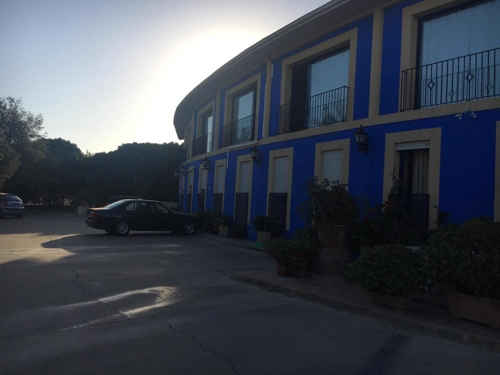

Localización
Av Argentina, 10, 11519 Puerto Real, Cádiz
Trasporte y Alojamiento
Alojamiento
El hotel mas cercano, calidad precio es el
Hotel Caballo Negro.
Una opción que es muy viable es alquilar un piso o una casa.
Se encuentran varias opciones en paginas como
airbnb,
booking,
tripadvisor.

Transporte
Para llegar en tren, debe de bajarse en la estacion las aletas y caminar durante 5 mins.
Para llegar en bus, debe de tomar la lines de buses que lo lleve al campus. Desde Puerto Real Lineas M-30, M-31.
Para llegar en coche, en la entrada se dispone de aparcamiento, usando tambien el aparcamiento de la Universidad.